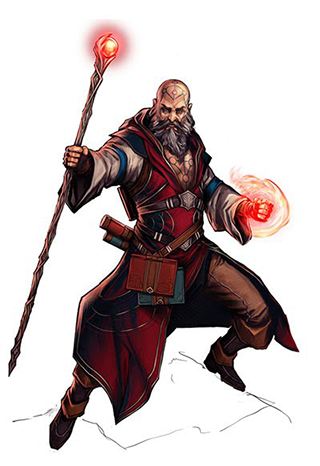

Beyond the veil of the mundane hide the secrets of absolute power. The works of beings beyond mortals, the legends of realms where gods and spirits tread, the lore of creations both wondrous and terrible—such mysteries call to those with the ambition and the intellect to rise above the common folk to grasp true might. Such is the path of the wizard. These shrewd magic-users seek, collect, and covet esoteric knowledge, drawing on cultic arts to work wonders beyond the abilities of mere mortals. While some might choose a particular field of magical study and become masters of such powers, others embrace versatility, reveling in the unbounded wonders of all magic. In either case, wizards prove a cunning and potent lot, capable of smiting their foes, empowering their allies, and shaping the world to their every desire.
Role: While universalist wizards might study to prepare themselves for any manner of danger, specialist wizards research schools of magic that make them exceptionally skilled within a specific focus. Yet no matter their specialty, all wizards are masters of the impossible and can aid their allies in overcoming any danger.
Alignment: Any
Hit Die: d6.
Starting Wealth: 2d6 × 10 gp (average 70 gp.) In addition, each character begins play with an outfit worth 10 gp or less.
Class Skills The wizard’s class skills are Appraise (Int), Craft (Int), Fly (Dex), Knowledge (all) (Int), Linguistics (Int), Profession (Wis), and Spellcraft (Int).
Skill Ranks per Level: 2 + Int modifier.
| Level | Base Attack Bonus | Fortitude Save | Reflex Save | Will Save | Special | Spells per Day | |||||||||
|---|---|---|---|---|---|---|---|---|---|---|---|---|---|---|---|
| 0th | 1st | 2nd | 3rd | 4th | 5th | 6th | 7th | 8th | 9th | ||||||
| 1st | +0 | +0 | +0 | +2 | Arcane bond, arcane school, cantrips, Scribe Scroll | 3 | 1 | - | - | - | - | - | - | - | - |